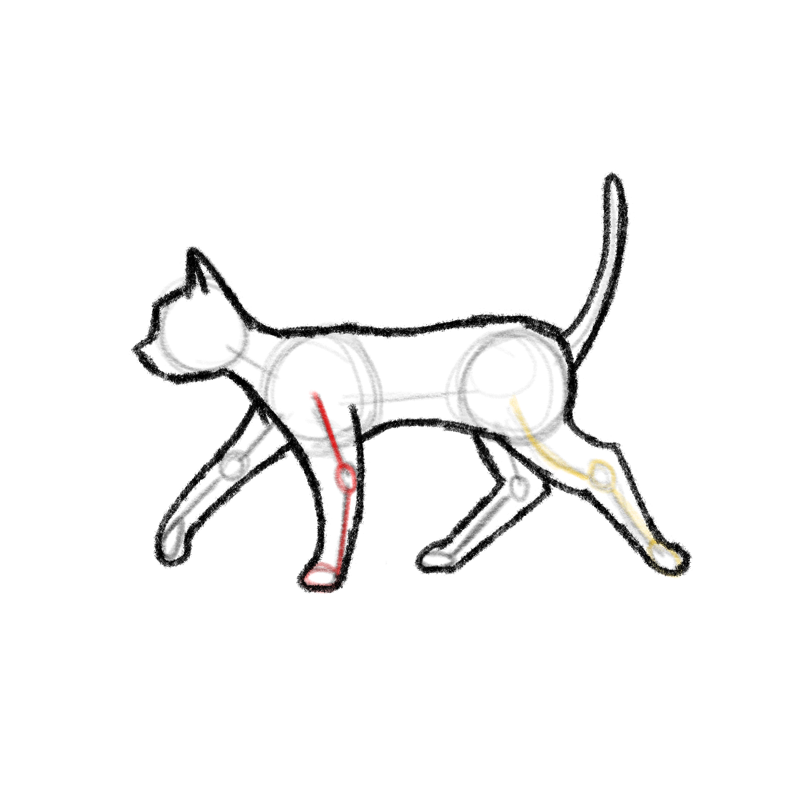

Heya, I'm Duc.
I am Duc Nguyen (Duke), a machine learning research engineer at EKFZ, Germany.
My work sits between deep learning, multimodal AI, and clinical medicine — building pipelines with clearer inspection layers, multimodal models for pathology workflows, and interfaces that make complex AI systems easier to reason through.
Before joining EKFZ, I worked as a research MSc student at Chonnam National University, South Korea, working on machine learning for computational empathy.